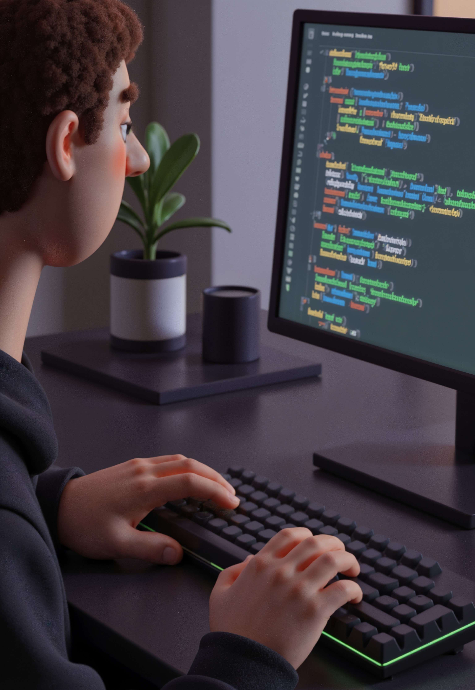

Lenguaje Java
En esta sección conocerás qué es Java y para qué sirve. También aprenderás dónde puedes programar en Java utilizando herramientas llamadas IDE. Haz clic en cada pregunta para ver la información.
¿Qué es Java?
Java es un lenguaje de programación que permite crear programas y aplicaciones para computadoras, páginas web, sistemas empresariales y aplicaciones móviles. Fue creado para que los programas puedan ejecutarse en diferentes dispositivos sin necesidad de modificarlos.
Para escribir programas en Java se utilizan herramientas llamadas IDE (Entorno de Desarrollo Integrado). Estas herramientas ayudan a escribir el código, encontrar errores y ejecutar los programas.
Algunos de los IDE más conocidos para programar en Java son:
- NetBeans
- Eclipse
- IntelliJ IDEA
Estas plataformas facilitan el aprendizaje de programación porque organizan el código y permiten ejecutar los programas de forma sencilla.

¿Para qué sirve Java?
Java se utiliza para desarrollar diferentes tipos de programas y aplicaciones. Es uno de los lenguajes de programación más utilizados en el mundo debido a su seguridad, estabilidad y facilidad para adaptarse a distintos sistemas.
Entre sus usos más comunes se encuentran:
- Aplicaciones web
- Programas de escritorio
- Aplicaciones móviles
- Sistemas empresariales
- Videojuegos
Además, Java es muy utilizado para aprender programación porque permite comprender conceptos importantes como clases, objetos, variables y estructuras de control.
Practicar Java en línea
Si deseas practicar Java sin instalar ningún programa en tu computadora, puedes utilizar el compilador en línea. Esta plataforma permite escribir código Java, ejecutarlo y ver el resultado directamente desde el navegador.
Practicar Java en Programiz